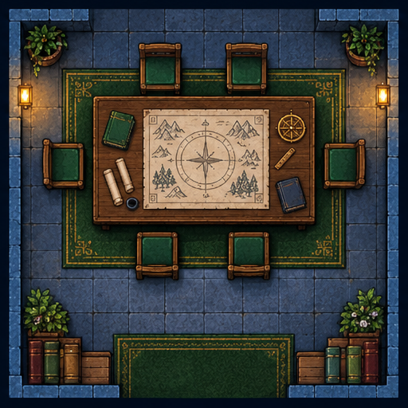
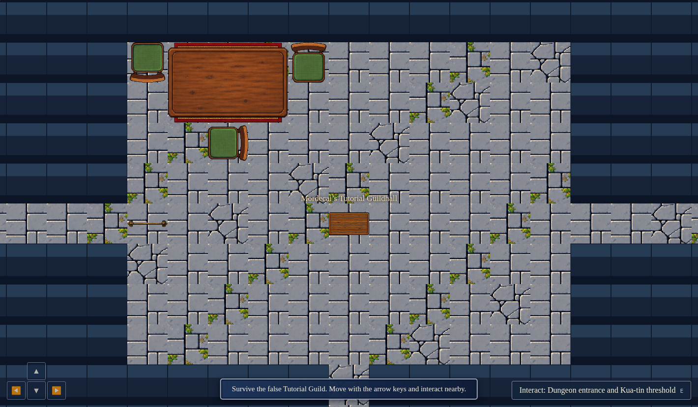
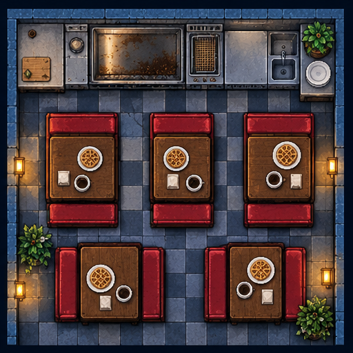
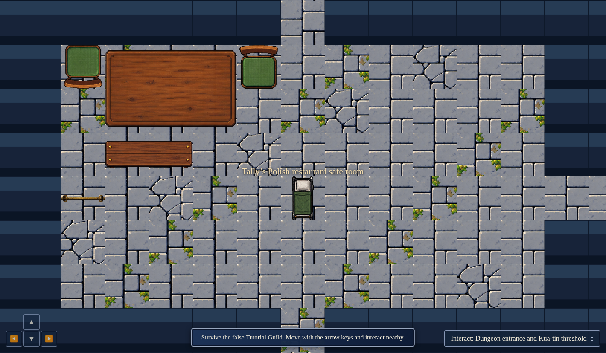
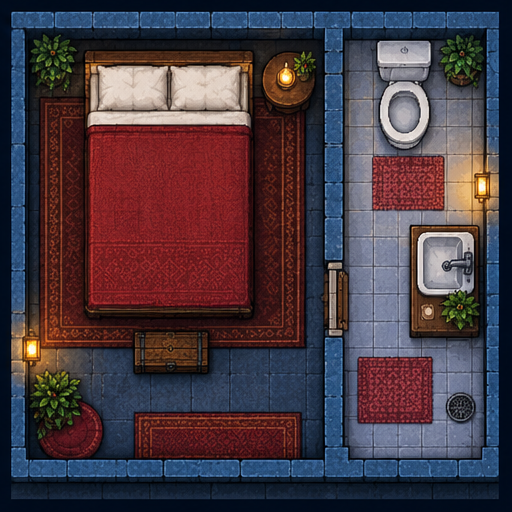
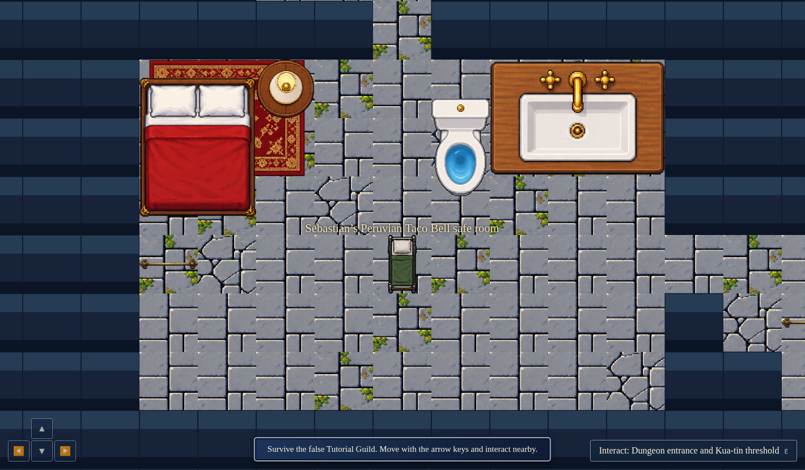

Original concept panels beside the current game renderer. These are visual comparisons, not a claim of a 1:1 match. Runtime captures use seed 1337; only the review camera is centered and zoomed to show each complete room. Canvas screenshots omit the surrounding HUD. Images retain their original aspect ratios.
Game revision c3da54223c99 · Original reference art preserved





Observed differences: the implementation uses modular floor tiles and whole-object props; the references have richer architectural detail, lighting, materials and decoration. Compare furniture arrangement and room silhouette as well as individual objects.